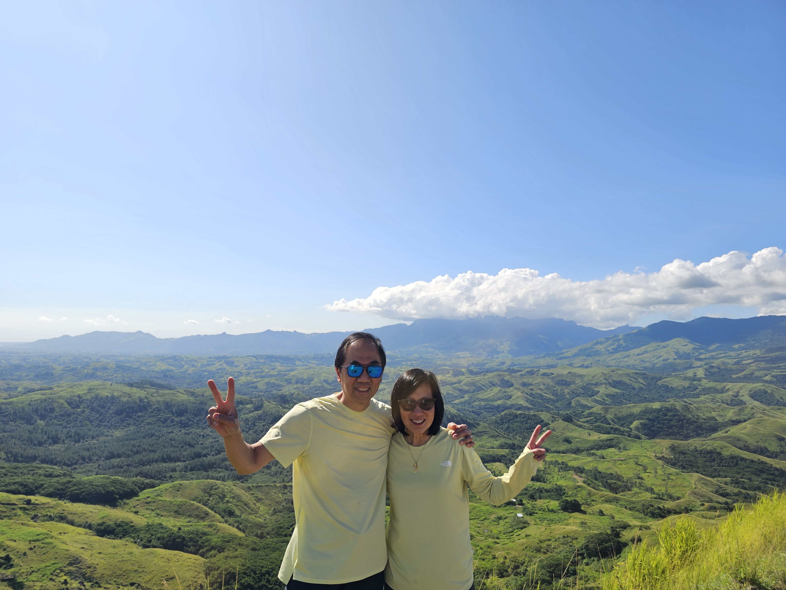
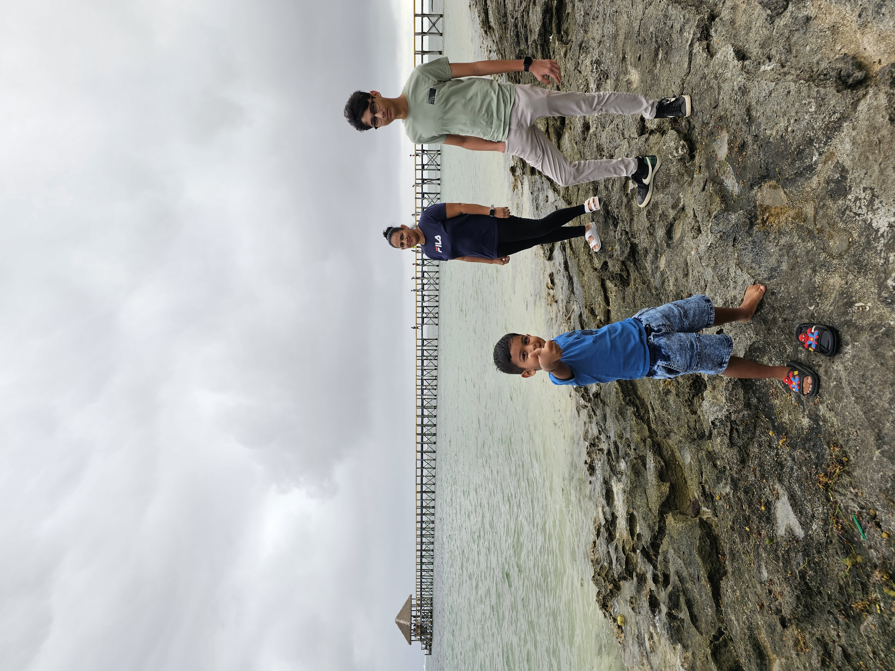
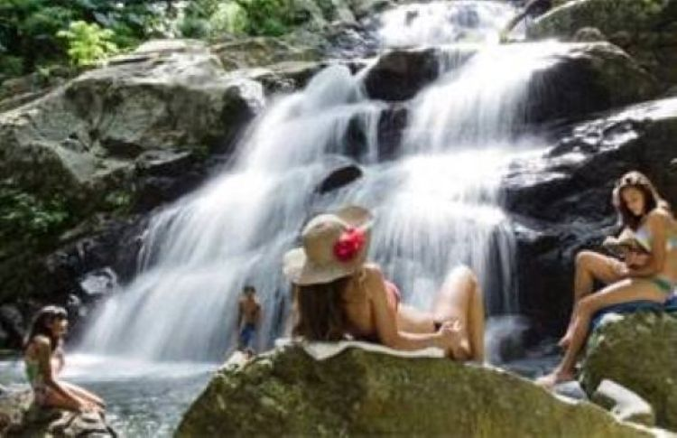

Scenery Places

Beautiful Waterfall
Experience the breathtaking scenery of the Nausori Highlands, where rolling green mountains, winding valleys, lush forests, and traditional Fijian villages create a peaceful and unforgettable tropical escape. Enjoy stunning panoramic views, fresh mountain air, and the beauty of Fiji’s untouched highland landscape.

First Landing VIllage
Visit First Landing Village, a historic coastal settlement where the first Fijian ancestors are believed to have arrived. Experience rich cultural heritage, warm village hospitality, traditional stories, and scenic ocean views that reflect Fiji’s deep history and welcoming spirit.

Maui Bay
Relax at Maui Bay, a beautiful coastal escape in Fiji known for its crystal-clear turquoise waters, soft sandy beaches, and peaceful tropical surroundings. Enjoy swimming, snorkeling, and stunning sunset views in one of the Coral Coast’s most tranquil seaside spots.
Relax at Maui Bay, a beautiful coastal escape in Fiji known for its crystal-clear turquoise waters, soft sandy beaches, and peaceful tropical surroundings. Enjoy swimming, snorkeling, and stunning sunset views in one of the Coral Coast’s most tranquil seaside spots.

Waterfall
Explore the Garden of the Sleeping Giant Waterfall, a hidden tropical gem surrounded by lush rainforest, vibrant orchids, and towering greenery. Enjoy a peaceful nature walk leading to a refreshing waterfall, offering a serene escape into Fiji’s natural beauty and tranquil highland atmosphere.